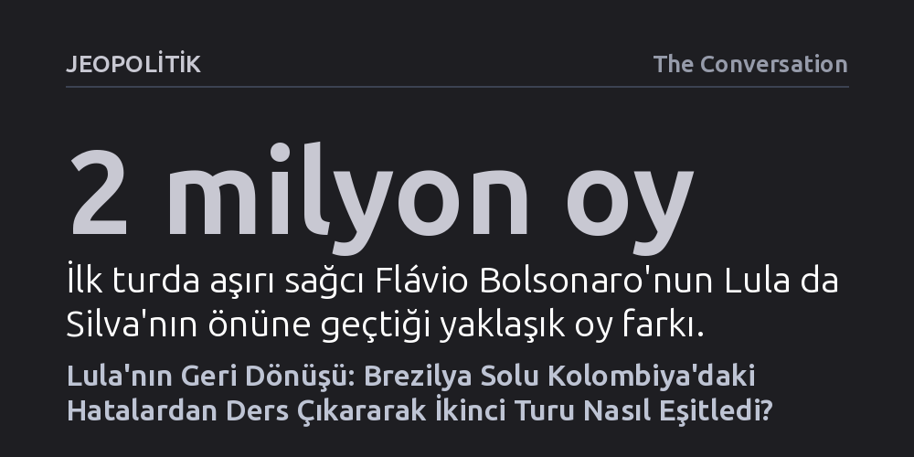

JEOPOLITIK · The Conversation · 2026-10-23
Brezilya Devlet Başkanı Lula, ilk turdaki sürpriz gerilemenin ardından Kolombiya solunun yaptığı hatalardan ders çıkararak güvenlik söylemini rakibine yöneltti ve alt-orta sınıfa somut kazanımlar sundu. Pazar günkü ikinci tur öncesinde anketler yeniden başa başa gelirken siyasi ivme Lula'dan yana döndü.
Latin Amerika'daki sağ dalganın durdurulamaz bir kader olmadığını, solun güvenlik alanını sağa terk etmeyip alt-orta sınıfın somut taleplerine yanıt verdiğinde iktidarını koruyabileceğini gösteriyor.

4 Ekim gecesi Brezilya solu, aylardır imkânsız gördüğü bir senaryoyla yüzleşti. Aşırı sağcı senatör Flávio Bolsonaro, devlet başkanlığı seçiminin ilk turunu Devlet Başkanı Luiz Inácio Lula da Silva'nın yaklaşık iki milyon oy önünde, geçerli oyların yüzde 47'sini alarak tamamladı. Yıl boyunca Lula'yı rahat bir farkla önde gösteren anketler hem kampanyayı hem de destekçilerini yanıltmıştı. Flávio cephesi bu sürpriz zaferi hızla kaçınılmaz bir kadere dönüştürmeye girişti ve ikinci turu adeta formalite sayarak bakanlık dağıtmaya başladı.
Bu siyasi senaryo büyük ölçüde Kolombiya'dan ödünç alınmıştı. 21 Haziran'da Kolombiya'da sağcı aday Abelardo de la Espriella, 25 milyon oyun kullanıldığı tarihi katılımlı seçimde solun adayı Iván Cepeda'yı yaklaşık 250 bin oy farkla mağlup etmişti. Bölgedeki sağ hareketler bu zaferi, Latin Amerika'da kaçınılmaz olarak Brezilya'yı da yutacak yeni bir muhafazakâr dalganın başlangıcı olarak sundu. Oysa Kolombiya'daki sonuç ideolojik bir kaderi değil, solun yönetmekte zorlandığı yapısal açmazları yansıtıyordu.
Kolombiya'da solcu aday Iván Cepeda, ülke tarihindeki en yüksek sol oy sayısına ulaşmasına rağmen kaybetti. Bu yenilgi ilerici koalisyonun çöküşü değil, görevdeki Gustavo Petro yönetiminin popülaritesiyle çizilen tavana çarpmasıydı. Bugün Güney Amerika'da hiçbir lider çoğunluk desteğine sahip değil; düşük ekonomik büyüme, mali kısıtlar ve yerleşik siyasete duyulan kronik öfke, iktidarda olmayı başlı başına bir seçim cezasına dönüştürüyor. Lula da görev süresi boyunca onay oranının hoşnutsuzluğun gerisinde kalmasıyla bu kuralın istisnası değildi. İlk turda parçalanmış muhalefete karşı elde edilen sahte üstünlük, rakip tek bir aday etrafında birleşince hızla eridi.
İkinci ders, aşırı özgüven ve dağıtım politikalarının sınırlarıyla ilgiliydi. Kolombiya solu ilk turda rahatça kazanacağına inanarak tartışmalardan kaçınmış ve sadece kendi tabanını konsolide etmeye odaklanmıştı. Lula'nın ilk tur kampanyası da aynı rehavete kapıldı. Üstelik yoksullukla mücadele programları solun en güçlü icraatı olsa da sandıkta en zayıf aracına dönüştü. Çünkü bu yardımların yararlanıcıları zaten sola oy verirken, yardım kapsamı dışındaki alt-orta sınıf kendisini bu sistemin vergi ödeyen finansörü olarak görmeye başladı.
Üçüncü ve en can alıcı ders kamu güvenliğinde yaşandı. Güvenlik, ekonomiyi geride bırakarak Latin Amerika seçmeninin birincil kaygısı haline geldi ve sağ bu alanı neredeyse direnç görmeden ele geçirdi. Kolombiya'da sağcı rakip silahlı gruplarla müzakereleri sertçe reddederken, Cepeda savunulamaz hale gelen "Toptan Barış" stratejisini açıklamaya çalışarak fırsatçı bir görüntü verdi. Dördüncü ders ise dış politika ve egemenlik söyleminin sınırlarıydı; yabancı liderlerin yarattığı güvenlik modelleri ve dış baskılara karşı bayrak etrafında toplanma çağrıları, sofradaki enflasyon ve istihdam kaygılarının önüne geçemedi.
Lula'nın kampanyası ilk turun ardından hızla strateji değiştirdi ve geçmişin mirasını oylatan bir referandum yürütmek yerine iki lider arasında somut bir tercih sunmaya başladı. Yalnızca kendi kitlesine konuşmayı bırakıp ilk turda sandığa gitmeyen 33 milyon seçmeni hedefledi. Dijital medyada agresif bir dil kullanılırken, solun uzun süredir sessiz kaldığı eyaletlerde ve mahallelerde yoğun saha çalışmaları başlatıldı. Bu dönüşüm sayesinde Lula'ya asla oy vermem diyenlerin oranı bir haftada yüzde 53'ten yüzde 47'ye geriledi.
Daha da önemlisi Lula, yoksulluk yardımının ötesine geçerek emeğiyle geçinen ve küçük işletme sahibi olan kentli alt-orta sınıfa hitap etti. Kampanyanın ortasında Senato'dan altı günlük çalışma haftasını sona erdiren yasal düzenleme geçirildi; küçük işletmelerin ve serbest çalışanların borçları yeniden yapılandırıldı. Böylece soyut vaatler yerine bu kesimin hayatına doğrudan dokunan somut kazanımlar sunuldu.
Güvenlik meselesinde ise solun klasik "suçun kökeninde yoksulluk yatar" savunması bir kenara bırakıldı. Bu teorik yaklaşım sandıkta sonuç vermediği için Lula cephesi suçu ve organize çeteleri doğrudan rakibinin üzerine yıktı. Flávio Bolsonaro'nun geçmişindeki yolsuzluk iddiaları ve Rio de Janeiro'daki milis gruplarıyla bağlantıları gündemin merkezine taşındı. Canlı televizyon münazarasında Lula'nın banka hesaplarını karşılıklı kamuoyuna açma çağrısı, savunma pozisyonunu tersine çeviren belirleyici bir darbe oldu.
Son kamuoyu yoklamaları, Lula'nın stratejik manevralarının aradaki farkı kapattığını doğruluyor. Datafolha anketinde Flávio ile Lula arasındaki fark yüzde 49'a karşı yüzde 51'e inerken, Quaest'in 21 Ekim tarihli araştırması oy oranlarını yüzde 44'e yüzde 45 ile hata payı içine yerleştirdi. Kararsızlar dağıtılmadan yapılan ölçümlerde ise her iki aday yüzde 40 ile eşitlenmiş durumda. Bütün göstergeler ivmenin son üç haftada görevdeki cumhurbaşkanına kaydığına işaret ediyor.
Kolombiya seçimleri kıtada durdurulamaz bir sağ dalganın kanıtı değil; yardım alan yoksullarla sermaye sahibi zenginler arasında sıkışan geniş çalışan kesime seslenemeyen bir solun taktiksel hatasıydı. Brezilya solu bu uyarıyı ilk turun hemen ardından aldı ve hatasından dönmeyi başardı. Pazar günü sandıktan çıkacak sonuç, üç haftalık bu yoğun geri dönüş hamlesinin aradaki farkı kapatmaya yetip yetmediğini gösterecek.